Walk your character onto the outdoor board, stand on your pieces to select them, and follow the
green dots to see where you can move.
Start in Practice with Predict: On to learn how to play — or turn
Predict: Off when you want a clean board like a tournament player.
New to chess?
The goal
You play White
— the computer plays Black
🏆 Win by attacking the enemy king and achieving checkmate — the king is trapped with no safe escape.
Protect your own king while you attack theirs.
How the pieces move (quick reference)
Piece
Moves
Pawn
Forward one square (two squares on its very first move). Captures diagonally forward.
Rook
Straight lines — horizontal or vertical, any number of empty squares.
Bishop
Diagonals — any number of empty squares.
Knight
L-shape (2 squares one way, 1 square sideways). The only piece that can jump over others.
Queen
Any direction — horizontal, vertical, or diagonal. Most powerful piece.
King
One square in any direction. Never move into danger!
Words you will see in this guide
Legal move — a move allowed by the rules that does not leave your king in danger.
Capture — move onto an enemy piece to remove it from the board.
Checkmate — the enemy king is attacked with no safe escape. You win!
Pending move — you have right-clicked a destination but have not confirmed it yet.
At the Chess-Stele front: set Level to 0 Practice and Predict to On.
Press the green START button (it shows Playing while a game is active).
Walk onto a white Pawn or King — it turns blue.
Look for green dots on the board — those squares are legal moves.
Right-click (RMB) a green square to set it as your target, then left-click / fire to confirm.
Recommended learning path
Practice (Level 0) — no computer opponent; learn how each piece moves with hints on.
Custom → Piece vs Piece — one white + one black of the same type; drill a single piece alone (see Custom).
Easy (Level 1) — play a full game against a gentle computer opponent (Leorik).
Puzzles — short "win in one move" challenges once you are comfortable moving pieces. Set Predict: Hint for the puzzle coach (see Puzzles).
Predict: Off — remove the training wheels when green dots and your own judgment are enough.
The sections below are a full reference for controls, Chess-Stele buttons, and advanced options.
Overview
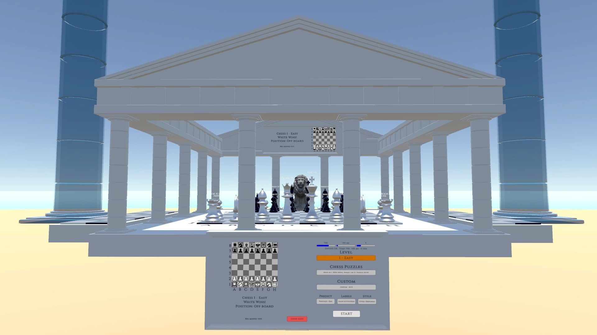
Figure 1. South Parthenon — outdoor 3D board during play.
3D play — stand on squares A1–H8, aim with the crosshair, and commit moves with fire.
Chess-Stele front — Level, Style, Predict, Puzzles, Custom, green START, red Clear.
Chess-Stele back — puzzle catalog, move History, or Custom layout + FEN editor.
Practice (0) — no engine; safe space to learn movement and read the hints.
Easy–Hard (1–4) — Leorik (computer) plays Black.
Inside the Chess-Stele trigger
Weapon fire is blocked — the crosshair operates chess UI instead.
On the 3D board
The Style setting on the Chess-Stele front switches between two presentations.
Standard moves happen instantly with flat circles on the board squares.
Wizard animates piece slides (~1 second per square) and adds glowing runic orbs and auras.
The legal-move rules are exactly the same either way — Style is purely visual.
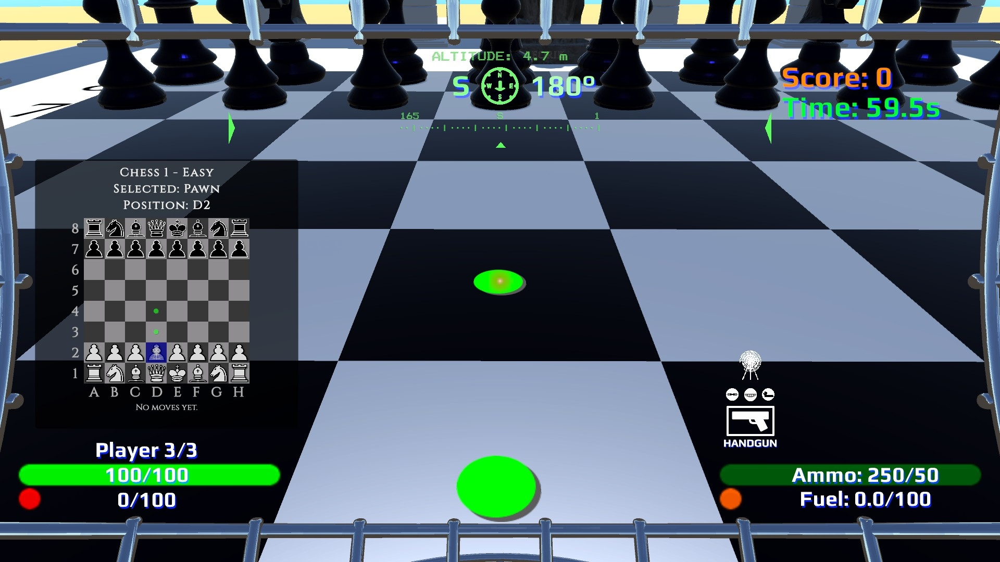
Stand on a white piece — green dots show where it can move.
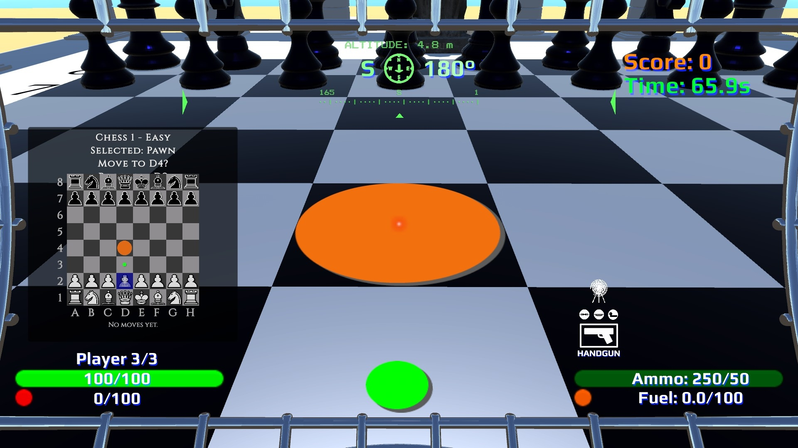
Aim + RMB — orange circle marks your pending destination.
Standard vs Wizard — how it looks
Same piece, same legal moves — different presentation. Toggle Style on the Chess-Stele front at any time.
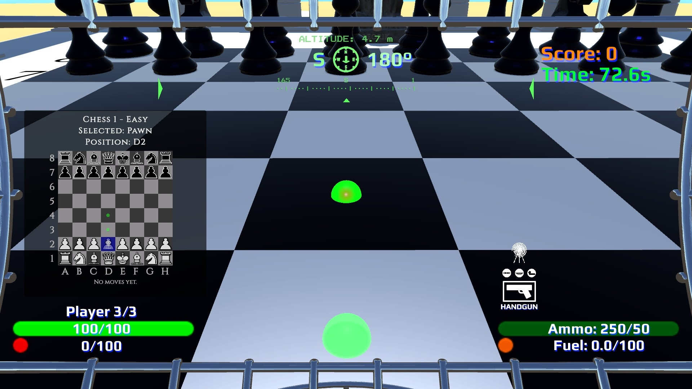
Wizard — glowing green orbs on legal squares.
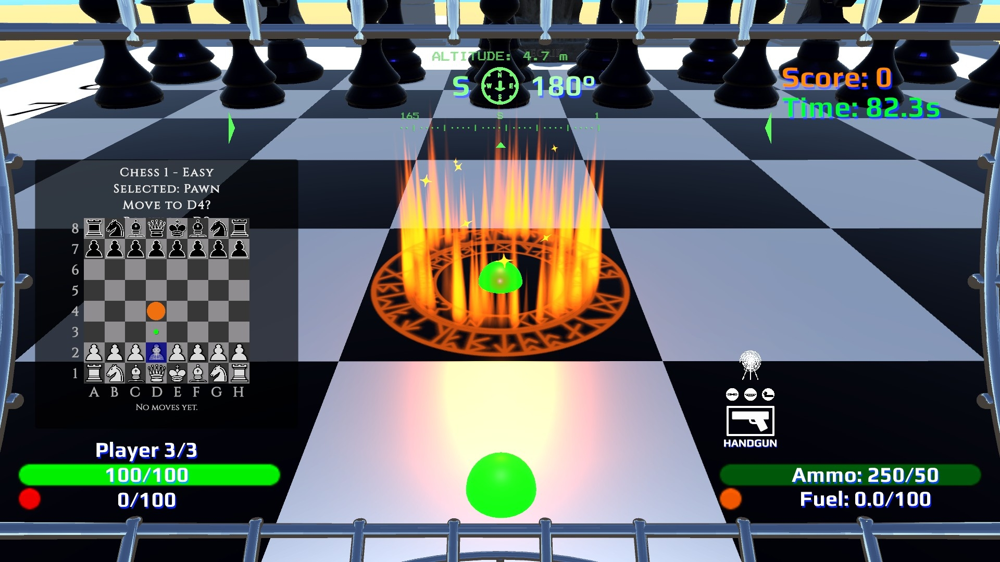
Wizard — green orbs + orange aura on your pending square.
Selecting a piece
Walk the Game Cage onto the chess board.
Stand on a white piece with legal moves — it turns blue and green dots appear on every square it can reach.
Stepping off to any empty square keeps your selection while you aim at a destination.
Step off the grid (outside A1–H8) to clear your selection and any pending move.
Making a move
RMB (right-click) on a legal square or capturable black piece — sets the pending destination (orange circle).
LMB (left-click) / fire — confirms the pending move. Your piece slides to the target.
Backspace — cancel pending move or clear selection.
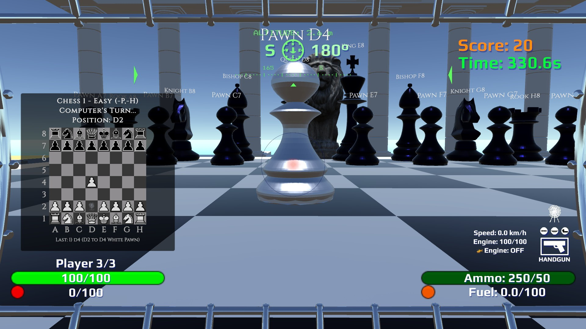
Standard opening, D2 to D4.
Wizard move — wait for the wizard slide and magic animation to finish before your next input.
White Queen takes Black Bishop for checkmate with Wizard capture effect — smoke and hit light.
Status display
The Tab quick board shows three lines of information — Game Mode, Selection, Position:
Puzzles 1/39 - Easy
Selected: Queen
Position: D3
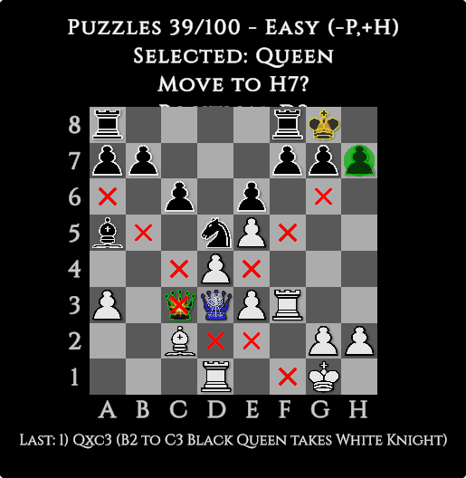
Tab board compact with top 3 Status lines showing possible piece moves
Status prefix
Meaning
Chess
Normal game vs Leorik (or Practice)
Puzzles
Active puzzle — shows puzzle number and total in batch on Tab board
Custom
Your own layout — includes the unique Piece vs Piece practice drill
2D boards
There are four 2D boards in the game, all mirroring the live 3D state in real time.
Two are display-only — they show every dot, circle, and badge but cannot be clicked or dragged.
Two are interactive — the Tab quick board lets you cycle Predict modes with H,
and the Chess-Stele back board lets you drag pieces to make moves.
Board
Location
Interactive?
Main display board
Above the outdoor 3D grid at South Parthenon
Display-only
Chess-Stele front
Front face of the Chess-Stele
Display-only
Chess-Stele back
Back face of the Chess-Stele
Interactive — Immediate mode (RMB drag) and Parthenon mode (RMB select → RMB destination → LMB commit). Toggle with the Mode button.
Tab quick board
Full-screen overlay — outdoor grid or back stele trigger
Interactive — H cycles Predict modes. Also opens from the back stele trigger.
Main display board
A large 2D board mounted above the outdoor 3D chess grid at South Parthenon.
It is display-only — you cannot click or drag anything on it.
It mirrors the live board state: green legal-move dots, orange pending circle, tactical overlays, and corner badges all update instantly as you play.
Tab quick board
Press Tab to open the Tab quick board in two locations:
While standing on the outdoor grid A1–H8 — replaces the weapon Quick Menu.
While standing in the back stele trigger — open it alongside the back mini board to verify both 2D boards show identical live state and overlays.
The overlay does not pause the game or capture movement input.
It auto-closes when you leave both the outdoor grid and the back stele trigger.
Interactive control — H: while the panel is open, press H to cycle
Predict intensity: Off → On (purple + tactical) → Hint (tactical + puzzle coach) → On + Hint (everything).
Each step briefly flashes Predict: … on screen and refreshes 3D + all 2D boards.
This is the only keyboard shortcut active while the Tab board is open.
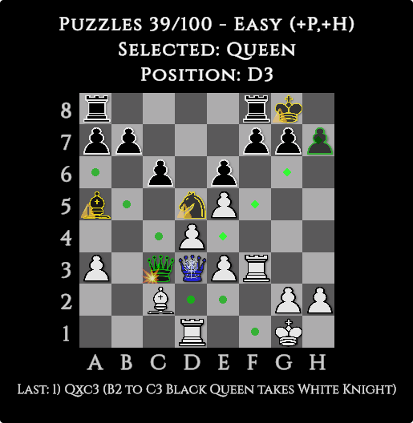
Tab quick board — full board, compact 3-line status, and move log. Press H to cycle Predict modes.
Green dots — legal moves to empty squares (always shown). Green diamonds — legal capture moves (enemy piece on that square).
Blue circle — the square where you are currently standing.
Tactical overlays (💥/⚠️ badges, yellow/red warnings, purple previews, scout/inspect diamonds) appear when Predict: On or Hint is active.
Move log stays in sync with the 3D game. Outside the chess grid, Tab opens the normal weapon Quick Menu.
Chess-Stele — front mini board
A compact 2D board on the front face of the Chess-Stele, displayed alongside the settings panel.
It is display-only — it shows the same live dots and circles as every other board but has no drag or click interaction.
Use it to glance at the board state while adjusting Level, Predict, or Style settings without opening the Tab board.
Chess-Stele — back mini board
A compact 2D board on the back face of the Chess-Stele.
This is the most interactive 2D board in the game:
Custom edit — in Custom mode, RMB drag pieces from the palette onto the board to build any position. See Custom positions.
Live play (Immediate mode) — RMB drag any White piece to a legal square to commit a move in one motion. Pawn promotion works automatically on rank 8.
Live play (Parthenon mode) — a multi-step remote control that mirrors 3D selection exactly. See Parthenon mode below.
Custom Edit only restriction — while building a board layout, pawns cannot be placed on rank 1 or rank 8. This restriction does not apply during live play.
Back mini board — Parthenon mode
Toggle between Immediate and Parthenon modes with the Mode button on the back panel.
In Parthenon mode the back board acts as a remote control for the 3D chess game —
all visuals, status text, and overlay animations are identical to what you would see
standing on the 3D board itself. The Tab quick board (press Tab from the back stele trigger) will show the same state.
RMB a white piece with legal moves → the piece and its square turn blue (matching the Tab quick board), green dots and diamonds mark legal squares, status shows Selected: [piece].
Move the cursor to the desired destination — a hover cursor highlight follows.
RMB on a legal square → orange circle marks the pending destination; status shows Move to X?
LMB — commit the move.
Backspace at any step — reverts one step (pending → selected → cancelled).
Look away from the board — cancels the entire selection.
All tactical overlays (green pathways, purple predict, caution tints, scout/inspect diamonds) pulse and animate
on both the back board and the Tab quick board while a piece is selected —
the same animations you see standing on the outdoor 3D square.
The blue player indicator (GameCage icon) sits on the selected piece's square,
matching the Tab board's standing-square indicator.
Overlays & colors
Colored markers — quick reference
All 2D boards share the same visual language. Basic markers show with any Predict setting.
Training markers require Predict: On, Hint, or On + Hint and are intended for beginners learning tactics.
Basic markers — always visible
Marker
Visual
Meaning
Green dot
Legal empty move — safe movement, not on an attack ray
Green diamond (small)
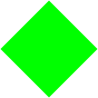
Sliding piece only — empty square on an attack ray heading toward a capture
Green diamond (large)
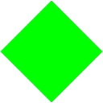
Legal move that captures an enemy piece (actual capture square)
Orange circle
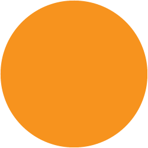
Your pending destination (right-clicked but not yet confirmed)
Blue square
2D boards — the square you are standing on
Dots vs diamonds at a glance
Dot — The square is safe to move to — nothing is threatened in that direction.
Small diamond — The square lies on a sliding-piece attack ray (Queen/Rook/Bishop) ending at a capture.
Large diamond — The actual capture target. Knights, pawns, and kings use dots for empty moves and large diamonds for captures.
Training markers — Predict: On, Hint, or On + Hint
Marker
Visual
Meaning
Purple dot
"What if?" preview — where a piece could go after your next move
Red piece tint + 💥
💥
Black piece that can capture your selected white piece right now
Yellow piece tint + ⚠️
⚠️
Black piece that could recapture if you move to your orange target
Blue tint on white pieces
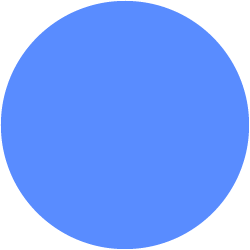
Other white pieces that already attack your orange destination — your backup
Blue square + blue piece tint
Parthenon mode — when you RMB-select a white piece on the back Chess-Stele, the square and piece turn blue, matching the Tab quick board
Red dot (small)
Enemy scout — safe empty square a black piece could reach (no attack ray)
Red diamond (small)
Enemy scout — attack-pathway square (sliding piece's ray aimed at a white piece)
Red diamond (large)
Enemy scout — white piece that black could capture; large diamond above the piece on 2D
Blue dot (small)
Friendly inspect — safe empty square another white piece could reach (no attack ray)
Blue diamond (small)
Friendly inspect — attack-pathway square (sliding piece's ray aimed at a black piece)
Blue diamond (large)
Friendly inspect — black piece that white could capture; large diamond above the piece on 2D
Inspect ring (red / blue)
Bracket ring on the inspected piece's own square — red for a black-piece hold, blue for a white-piece hold
Puzzle coach markers — Predict: Hint + active puzzle only
Marker
Visual
Meaning
Green circle (large)
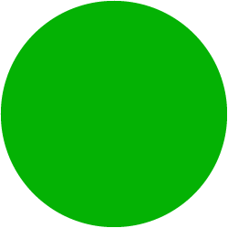
The square where checkmate happens — solution hint
Red X
Wrong square while you are aiming — never shown outside an active puzzle
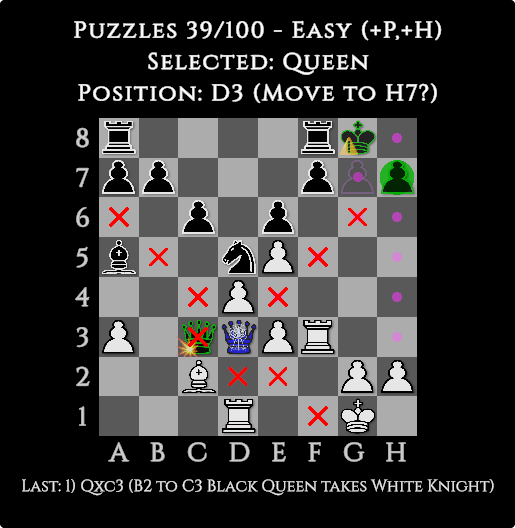
2D overlay close-up — dots, circles, and corner badges.
Predict: Off — clean board: green legal moves + blue standing square only. Good for experienced players.
Predict: On — purple "what if" previews plus all tactical training: scout/inspect holds, 💥/⚠️ caution badges, warning tints, wizard auras. Recommended while learning.
Predict: Hint — tactical training (no purple) pluspuzzle-only coach: large green circle on the mate square and red X on wrong squares. No puzzle effect outside an active puzzle.
Predict: On + Hint — everything: purple previews, all tactical training, and the puzzle coach.
Any setting other than Predict: Off enables tactical overlays on both the 3D board and every 2D board
(Chess-Stele mini boards and Tab quick board) in all chess modes.
With Predict: Off you still see green legal-move markers
and the blue standing square — but no warnings, purple dots, scout/inspect holds, or caution badges.
Wizard style still animates slides; with Predict Off it shows green/blue/orange glowing markers on the outdoor board.
Scout/inspect holds, caution badges, and runic piece auras require Predict: On, Hint, or On + Hint.
Green + purple overlap
On 2D boards, when a square has both a green dot or green diamond (legal move now) and a
purple dot (hypothetical next move), they alternate —
green fades out as purple fades in, using the same rhythm as orange circles and tinted pieces.
Purple dots are the same size as green dots and green capture diamonds.
Red and blue diamonds on the same square alternate with purple the same way.
Threatened white pieces under a large red scout diamond and threatened black pieces under a large blue inspect diamond ghost-pulse with that rhythm — the piece fades out when the diamond is at full brightness.
For a full sprite-by-sprite glossary see Colored markers — quick reference above.
The sections below explain when each overlay appears and how to read it in play.
When an orange destination is set,
yellow / ⚠️ marks black pieces defending that square and
blue tints mark white pieces already attacking it — your backup.
The piece you are moving is not tinted blue.
Study an enemy piece (hold crosshair ~1 second)
Aim the crosshair at a black piece and hold about one second. Requires Predict: On or higher.
Standard mode — a red bracket ring appears on the black piece's own square; red dots mark safe empty squares it can reach; red diamonds mark attack-ray squares heading toward a white piece; large red diamonds appear directly above any white piece it could capture. The black piece gets a red tint and a badge on 2D boards when it threatens a capture. Piece Labels (if on) also show the on threatened white name tags.
Wizard + Predict: On — red glowing auras appear on the hovered piece and all its reachable squares; 2D boards show small red diamonds on every reachable empty square (not just attack rays), matching 3D aura coverage.
Wizard + Predict: Off — scout holds are fully disabled — nothing appears on 3D or 2D.
Look away to dismiss. Setting a pending move with RMB also clears it.
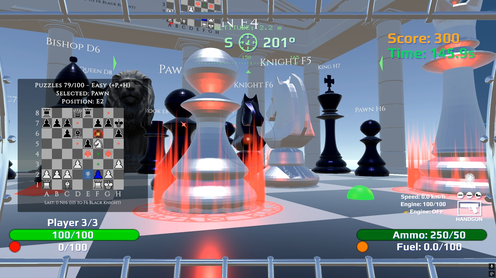
Aim inspecting the Knight at F6 showing small red diamonds and large attack diamonds on E4 - white Pawn and G4 - white Queen as potential targets.
Study another friendly piece (hold crosshair ~1 second)
Aim at a different white piece — not the one you are standing on — and hold about one second. Requires Predict: On or higher. Your standing piece keeps its own green move dots.
Standard mode — a blue bracket ring appears on the white piece's own square; blue dots mark safe empty squares it can reach; blue diamonds mark attack-ray squares heading toward a black piece; large blue diamonds appear directly above any black piece it could capture (pieces stay black — no blue tint; diamond art is tinted blue in-engine). Piece Labels (if on) also show the on threatened black name tags.
Wizard + Predict: On — blue glowing auras on the hovered white piece and all its reachable squares; 2D boards show small blue diamonds on every reachable empty square (not just attack rays), matching 3D aura coverage.
Wizard + Predict: Off — friendly inspect holds are fully disabled — nothing appears on 3D or 2D.
Look away to dismiss.
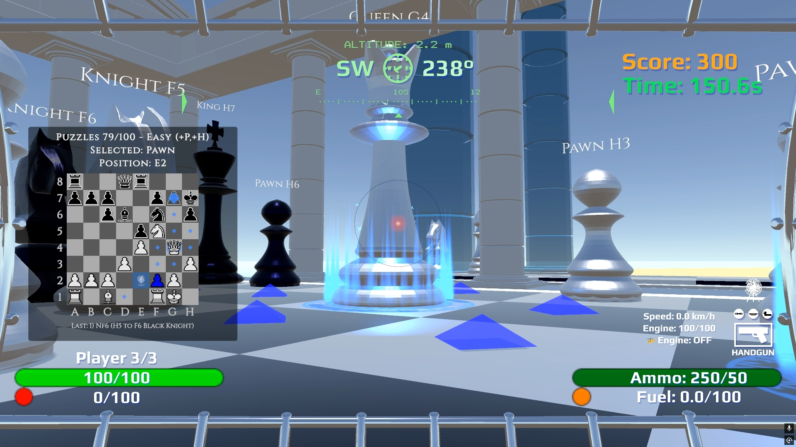
Friendly inspect hold (~1 s hold; small on empty squares, large above threatened black pieces)
Chess-Stele — front panel
Stand in the front trigger and aim the crosshair at the controls.
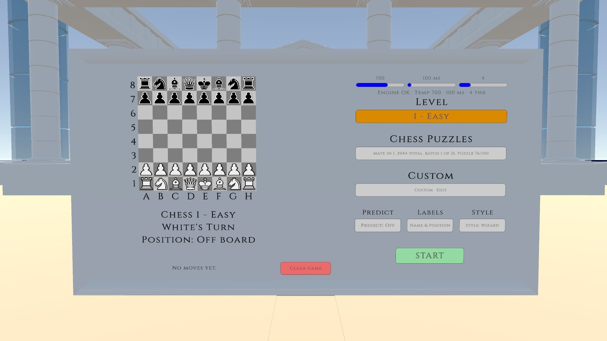
Figure 2. Front panel
Input
Action
Mouse wheel on a control
Change that setting
Left-click
Select Level / Puzzles / Custom, press green START, or red Clear
Shift + click Puzzles
Clear all solved ★ marks
Buttons
Levelmode — wheel cycles 0 Practice → 4 Hard. Glows cyan when selected.
Piece Labels — 3D floating name tags: Name / Name & Position / Position / None. Setting to None hides / caution hints on 3D name tags (2D corner badges also hide); green capture tints still follow Predict. The label on the piece you are standing on is always hidden while you occupy that square — it would obstruct the view.
Style — Standard (instant moves, flat circles) ↔ Wizard (animated moves + glowing orbs/auras). See On the 3D board for a visual comparison. Independent of Predict.
Predict — Off / On / Hint. Wheel cycles Off → On → Hint. See the table below.
Custommode — build your own board on the back panel; includes the unique Piece vs Piece drill.
START / Play / Playing — green button starts the selected mode. Shows Play in Custom edit, START for Level/Puzzles, and Playing while that session is active.
Clear (red) — resets the active mode only. Label changes by context: Clear game (Level), Clear puzzle or Clear board (Puzzles), Clear board / Restart (Custom). Green button returns to START or Play after clearing.
Predict — who should use which setting?
Setting
Best for
What you see
Off
Experienced players
Green dots (empty legal squares) + green diamonds (capture squares) + blue standing circle. No warnings, purple, scout/inspect holds, label badges, puzzle greens, or red X. Wizard: glowing green/blue/orange orbs on 3D (capture squares use the same orb; piece turns green to mark captures).
On
Learning chess
Everything in Off, plus all tactical overlays in every mode: purple "what if" dots, red/yellow warning badges, scout/inspect holds, wizard runic auras. No puzzle solution circle or red X.
Hint
Solving Puzzles
All tactical overlays (no purple), plus puzzle-only coach: large green circle on the mate square and red X on wrong squares while aiming. No extra effect outside an active puzzle.
On + Hint
Puzzles with full training
Everything: purple "what if" dots, all tactical overlays, and the puzzle coach (green circle + red X).
START, Play, and Clear workflow
Select a mode (Level, Puzzles, or Custom).
Click the green button — START (Level/Puzzles) or Play (Custom). Button shows Playing while active.
Click red Clear to reset that mode only; green button returns so you can start again.
Custom only: Shift + Clear while editing loads the standard starting position.
Other modes keep their own saved games — clearing Level does not erase your Custom layout.
Leorik tuning (advanced — Easy+ only)
You can skip this section until Level 1 (Easy) or higher.
Practice (Level 0) hides these sliders entirely.
They adjust the computer opponent (Leorik) — not your hints or overlays.
Aim at a slider on the Chess-Stele front and scroll the mouse wheel.
Temperature (0 – 990)
Higher = weaker and more random opponent. Lower = stronger and more focused. Wheel step: 10.
Level
Default
~Slider position
1 Easy
700
~71%
2 Beginner
300
~30%
3 Normal
100
~10%
4 Hard
0
Far left
Movetime (100 – 1000 ms)
How long the computer thinks before each Black move. Wheel step: 50 ms.
Level
Default
1 Easy
100 ms
2 Beginner
300 ms
3 Normal
500 ms
4 Hard
1000 ms
Puzzles always use 100 ms for Black's forced replies regardless of the Movetime slider.
Threads (1 – 16)
How much CPU the chess engine uses. Default 4. Only change this if you know you need to. Wheel step: 1.
Chess-Stele — back panel
Stand in the rear trigger. The back panel content changes depending on which mode is active on the front.
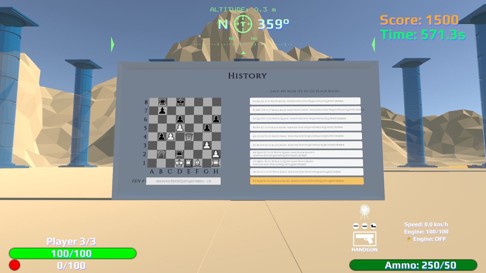
History
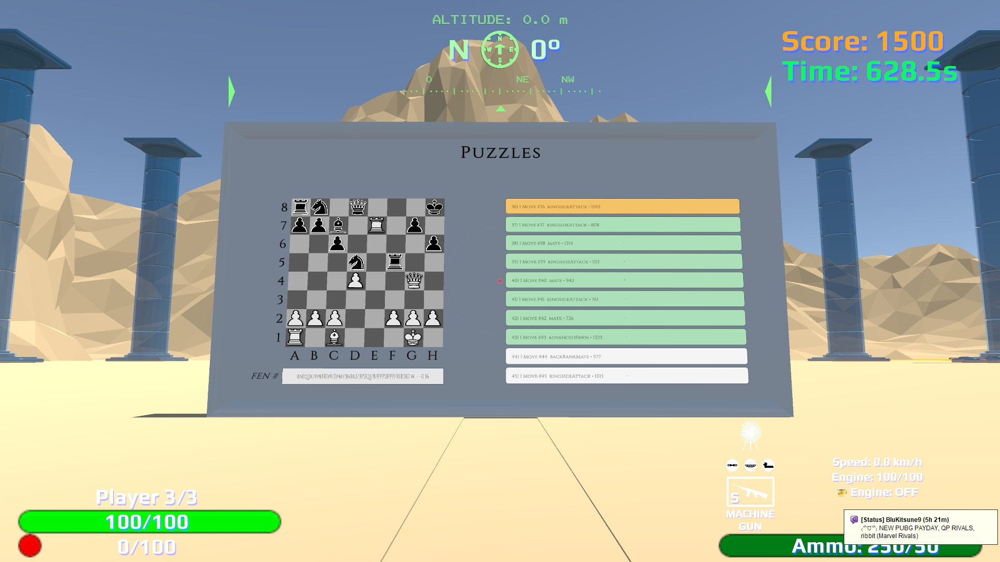
Puzzles
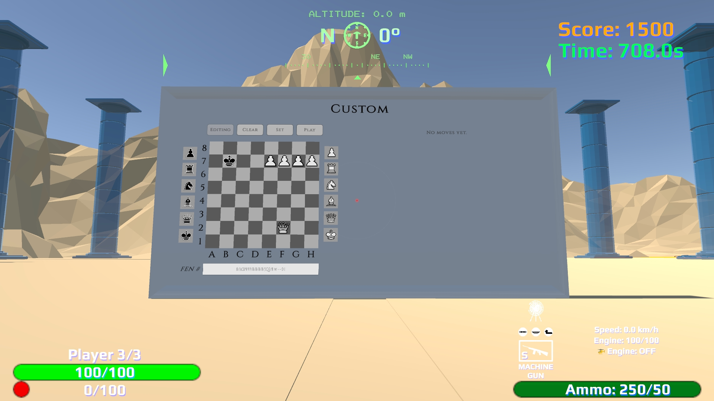
Custom
Front mode
Back header
Content
Level / playing
History
Numbered move log + mini 2D board
Puzzles
Puzzles
Scrollable puzzle catalog (~10 rows visible)
Custom
Custom (N)
FEN field, white/black palettes, edit controls
Mouse wheel — scroll the list.
Left-click a row — jump to that puzzle or history position (History rows play a click sound).
Aim at a row — highlights in light blue under the crosshair.
Green row — puzzle solved. Orange row — current selection.
History controls: Shift + wheel scrolls the log; LMB selects a line; RMB redos to that position (Leorik replies if it's Black's turn); Backspace / Ctrl+Z / MMB undoes the last full turn.
Move log (History)
The History panel lists moves in standard chess notation (short codes like e4).
On Practice, Easy, and Beginner, each line also shows plain English in brackets — for example: e4 (E2 to E4 White Pawn).
History rows highlight in light blue when you aim at them; left-click plays a click sound.
Puzzles
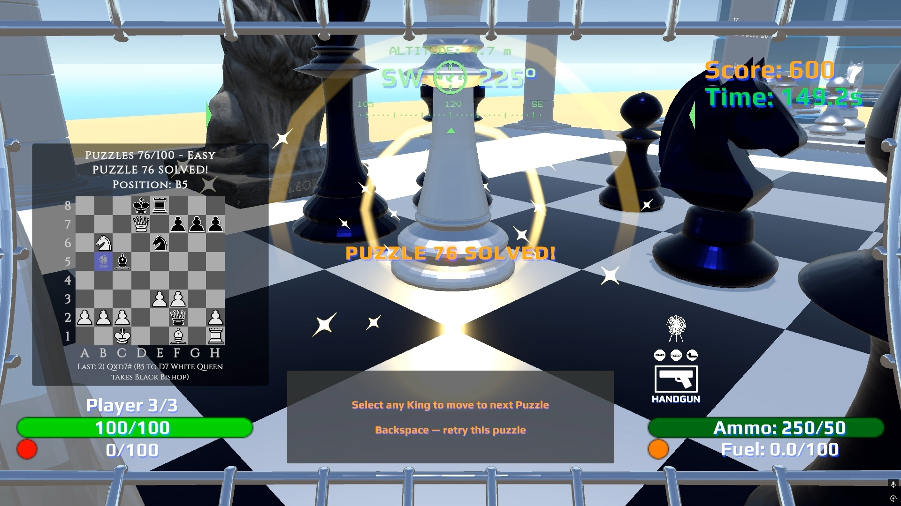
Puzzle solved / advance to next.
Puzzle list labels
Example row: 1 Move #3 kingsideAttack • 1546 — puzzle number, moves to mate, tag, and position number.
How to start a puzzle
On the front: select Puzzles, then pick a row on the back and press green START.
The HUD flashes Chess Puzzle #n; the Chess-Stele shows e.g. Puzzles 1 - Easy.
Find the move that puts the black king in checkmate (no escape).
On success: PUZZLE n SOLVED! — stand on Any King to load the next puzzle.
Set the Chess-Stele front to Predict: Hint before pressing START (or press H on the Tab board).
Coach overlays appear only while a puzzle is active — they never appear in Level, Practice, or Custom.
Green circle — the square that delivers checkmate.
Red X — you are aiming at a wrong square. Shown on 3D and all 2D boards.
Outside an active puzzle, Predict: Hint gives all tactical training overlays (same as On, but without purple "what if" previews) — the green solution circle and red X never appear outside a puzzle.
Custom positions
Front: select Custom — the back board clears for editing.
Back: RMB drag pieces from the white/black palettes onto the mini board.
Clear Board empties the layout. Set Game loads the standard starting position (where available).
Front: press Play when the layout is valid — triggers Piece vs Piece Practice (2 mirrored pieces) or a normal Custom game (3+ pieces with both kings).
Ctrl+V paste — advanced: load a saved board code (Custom edit only; multiple pasted lines build a playlist).
Custom mode — unique South Parthenon "Piece vs Piece" Practice
For beginners only. This drill exists nowhere else in the game. Place one White + one Black of the same piece type (P/R/N/B/Q/K), press Play, and practice how that piece moves for up to 50 moves. A 7-second center banner confirms practice mode (e.g. King Practice 50 Moves). FIDE rules apply including pawn promotion on the 3D board. Leorik replies when available. Ends on capture, mate/stalemate, or the 50-move draw. You cannot add a third piece without clearing the board first.
Piece vs Piece — example setups
Three common beginner drills.
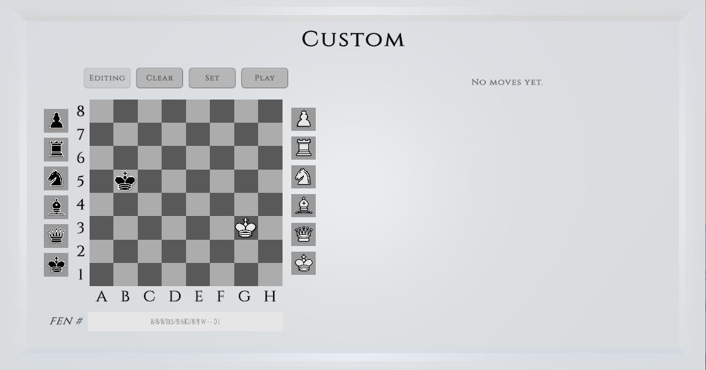
King vs King
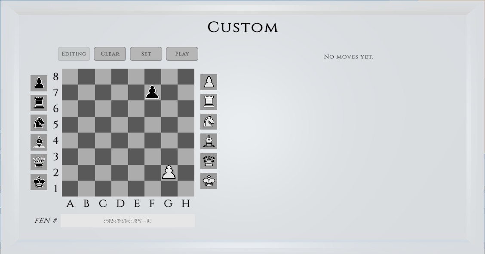
Pawn vs Pawn
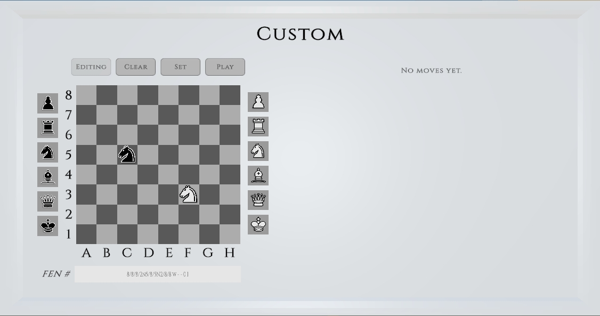
Knight vs Knight
During live play, the back mini board accepts RMB drag of White pieces to legal squares.
When a pawn reaches rank 8, the promotion panel opens automatically — use W/A/S/D to choose Queen, Rook, Knight, or Bishop, then RMB or Space to confirm.
The 3D board is always the primary input; the back mini board mirrors every move in real time.
Custom Edit only restriction: while building a layout, pawns cannot be placed on rank 1 or rank 8.
This does not apply during live play — pawn promotion works normally.
Back mini board — Immediate mode drag preview
In Immediate mode, hold LMB while dragging a white piece to see a temporary tactical preview — green legal squares, yellow/red caution tints (yellow defenders, red immediate attackers). Release LMB to hide. The green squares are always shown; yellow/red caution tints require Predict: On or Hint.
Back mini board — Parthenon mode tip
Press Tab while standing in the back stele trigger to open the Tab quick board alongside the back mini board.
Both 2D boards will show identical overlays and status — useful for verifying everything is in sync before committing your move.
Backspace reverts the selection one step at a time; looking away from the board cancels completely.
Ctrl+C on the layout field copies the current board code. Ctrl+V paste loads a position in Custom edit.
Tips
Game info balloon
Summarizes Chess-Stele controls when you enter a trigger. Caps Lock can collapse it during play.
Predict: Off = clean pro view (green + blue only). On the Tab board: press H to cycle Predict: Off → On → Hint → On + Hint; mode flashes briefly on screen.
Predict: On = purple previews + all tactical badges, scout/inspect holds, wizard auras. Predict: Hint = tactical badges (no purple) + puzzle coach (green circle + red X, puzzles only). On + Hint = everything.
Style = move presentation (Standard instant vs Wizard animated). Predict = training overlays. Wizard + Predict Off still shows glowing green/blue/orange markers on 3D.
After red Clear, the green button returns to START or Play — it will not stay stuck on Playing.
💥/⚠️ caution hints need any Predict setting other than Off and Piece Labels not set to None. Yellow/red black-piece tints and blue backup white-piece tints on 2D follow the same rule.